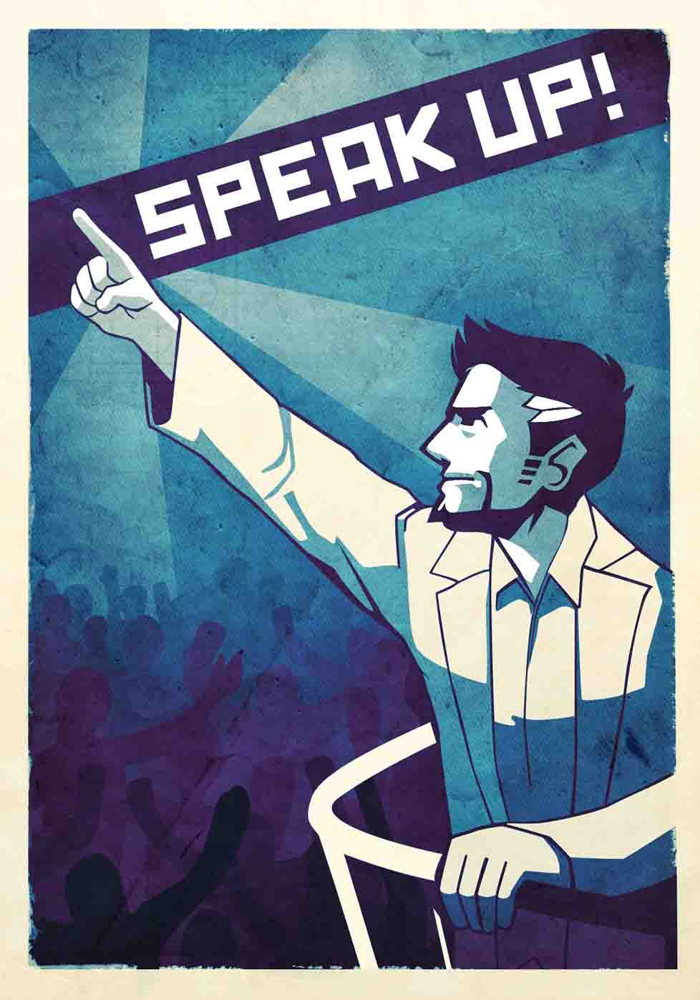

Physicians have an important role to play in health advocacy for patients and populations. Their voices are needed in the community: as community volunteers, public health and public policy experts, and in other roles that support human well-being. In fact some researchers believe that advocacy competencies should be introduced in medical schools.
Many doctors still feel there is too much risk in acting publicly. Some are overwhelmed by the administrative demands of healthcare reform. Others are simply burned out.
Just as patients must learn to advocate for themselves, so do medical practitioners.
